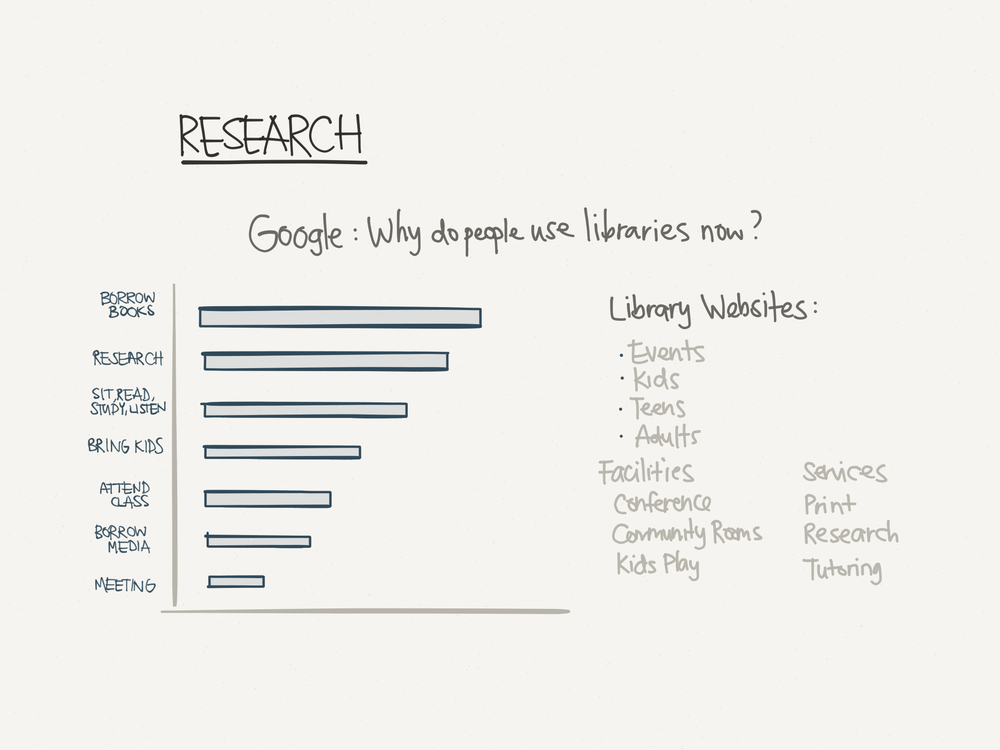
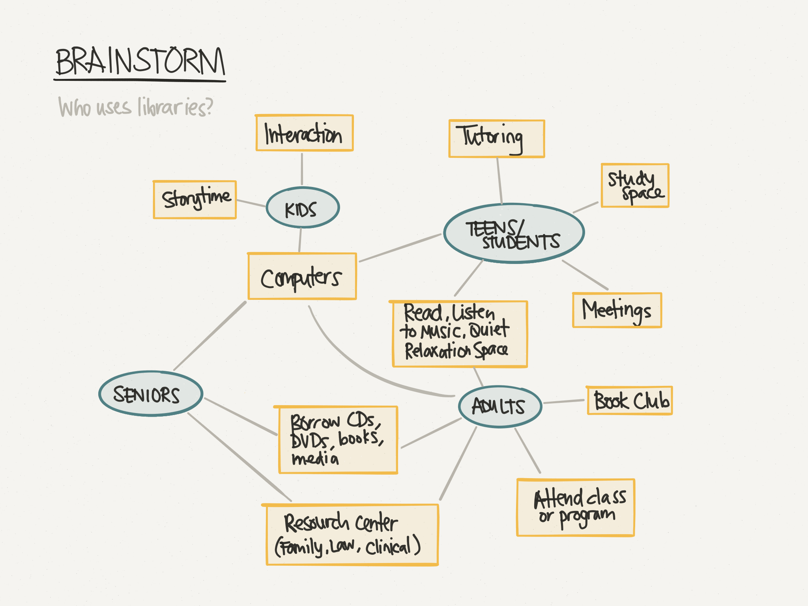
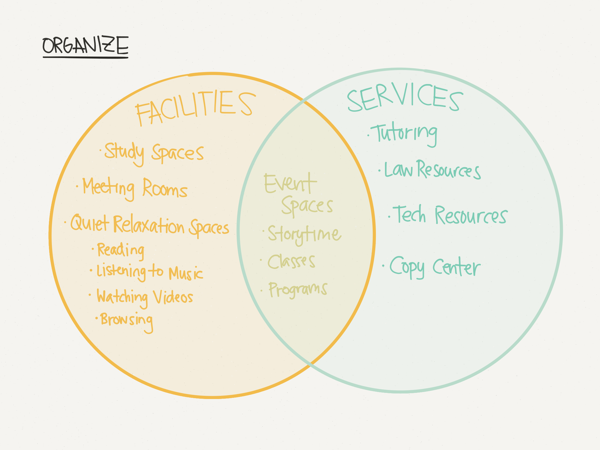
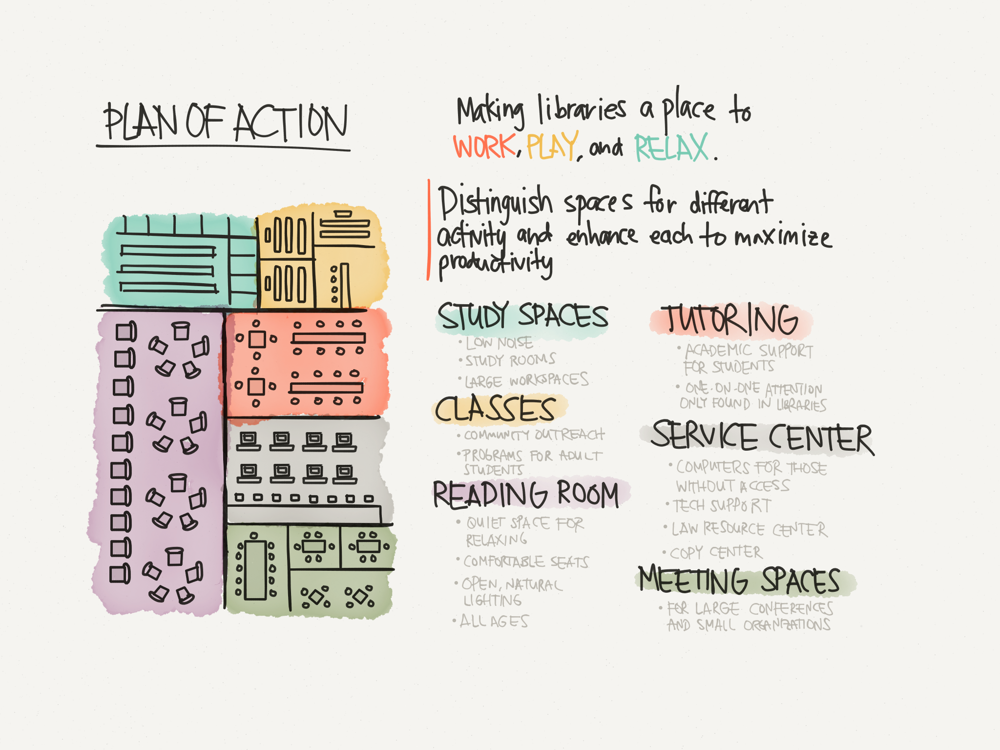
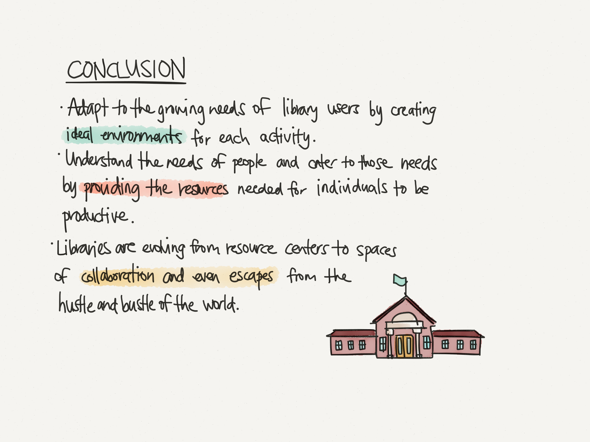

Rethinking the Library
As part of an application for UC Berkeley's Berkeley Innovation, this project was a 30-minute design challenge to reimagine how we see libraries.
I began by doing some research on what people use libraries for today. I found evidence to support the theory that libraries are evolving from being just a place to checkout books to hubs of productivity, interaction, and resources.
I then went on to brainstorm a way of organizing the different functionalities of libraries and the groups of people they cater towards.
I organized these functionalities into two groups: facilities and services, with some items categorized in the overlapping portion.
With an organized structure in mind of how libraries can be improved, I devised a plan of action. This involved distinguishing the spaces within a library to maximize productivity and convenience for users.
In conclusion, I explained that the evolution of the purpose of libraries has called into demand spaces for work, play, and relaxation, rather than purely book-focused.
All images hand-drawn using the Paper 53 iPad app